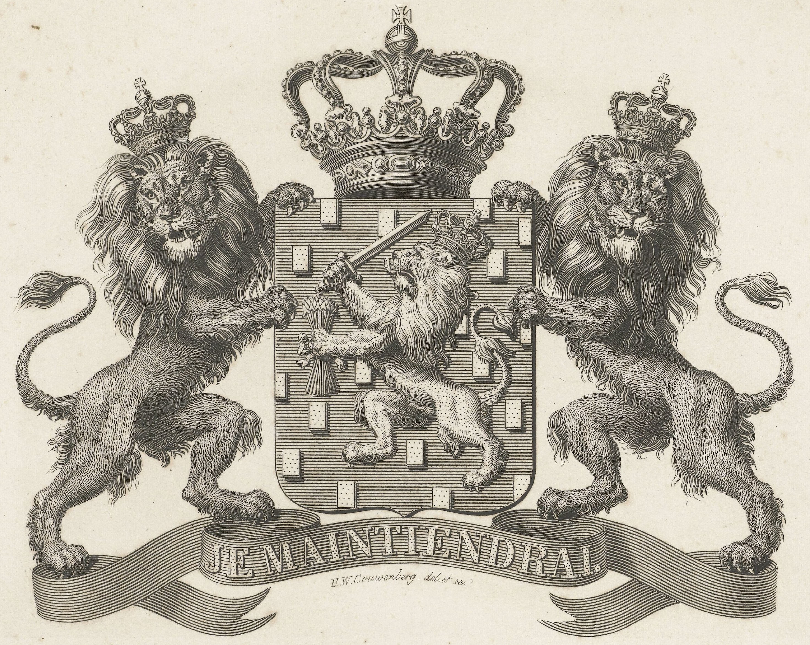

Oranje-Nassau in Kingdom of the Netherlands, 1851 to PRESENT
Nassau's Lion and the Seven Arrows

Fig. 1. Coat of arms of the Netherlands, 1815 to PRESENT
The reverse features the coat of arms of the Kingdom of the Netherlands, surrounded by the inscription “MUNT VAN HET KONINGRYK DER NEDERLANDEN” and the mint year. Flanking the coat of arms are the Mint Master’s mark and the Mint mark. Following the 1863 linguistic reform by De Vries en Te Winkel, the letter “Y” was no longer used as a variant of the digraph “IJ.” Consequently, the 1875 revision corrected the spelling to “KONINGRIJK DER NEDERLANDEN.” A second revision in 1876 relocated the mint year from above the coat of arms to below it. Among the gold denominations issued between 1818 and 1933, the 5-gulden coin (1848–1851) remains the most distinctive: it replaces the standard denomination with an oak wreath, with its weight, date, and fineness inscribed directly above the shield.
The central element of the coat of arms of the Kingdom of the Netherlands is a golden lion rampant, crowned and armed with a sword and seven arrows. Both the lion and the azure shield, adorned with a semé of golden billets, are direct legacies of the House of Nassau. While the precise primary documentation for its very first adoption is obscured by antiquity, heraldic tradition offers a clear interpretation: the rectangular billets (at least twice as tall as they are wide) represent cut timber, symbolizing a lord's sovereign right to expand and cultivate forested lands.[1] The golden rampant lion itself emerged from the “Age of the Lion” in late 12th-century European heraldry. Often traced back to the classical cult of Hercules, it symbolizes courage, military prowess, and the supreme authority to command armies.[2] A significant heraldic nuance exists within the House of Nassau: the lion of the Ottonian line (the younger branch) was historically uncrowned—a key feature distinguishing it from the crowned lion of the Walramian line (the elder branch). The presence of a crown on the current national coat of arms thus represents a heraldic “augmentation of honour,” signifying the elevation of the House of Orange-Nassau to royal status in 1815, effectively eclipsing the traditional seniority of the Walramian branch. In contrast, the origins of the sword and the seven arrows are well-documented; they derive from the Dutch Republic, the United Provinces, representing the defense of sovereignty and the unity of the seven original provinces that declared independence from Spanish rule, respectively.
Another fascinating detail on the gold coins of the Kingdom of the Netherlands is the mint master’s mark (muntmeesterteken), positioned symmetrically opposite the mint mark (muntteken). From the final years of Willem I’s reign through the twilight of the standard circulating gold Gulden (1838–1933), each mint master personally selected a distinctive, artistically designed symbol for the lower-left corner of the coin's reverse. As a tradition, the acting mint master will keep the last mark in action with a simple modification, typically a star, until the new mark is approved.
The first of these, Paulus Charles Gerard Poelman (1838–1845 in office), utilized a classic fleur-de-lis derived from his family coat of arms (Fig. 2). His successor, Herman Adriaan van den Wall Bake (1846–1874), transitioned the aesthetic from floral to martial, choosing an "antique sword" (een antiek zwaard) to symbolize authority and legal order.[3] According to the original royal decree, this sword was distinct from contemporary officer's blades; it featured two protrusions near the hilt and an oval-shaped pommel, creating a structure reminiscent of a trefoil.[4] This geometric design offered practical advantages: unlike the intricate lines of the previous fleur-de-lis, the sword’s bold silhouette remained legible even after extensive circulation. This tradition of "instruments of justice" was maintained by the subsequent masters: Philip Hendrik Taddel (1874–1887), Bake’s long-time assistant, adopted the battle axe (bijl), while Bake’s nephew, Hugo Laurens Adriaan van den Wall Bake (1888–1909), selected the halberd (hellebaard).
This martial lineage was abruptly broken in 1909 by Dr. Copius Hoitsema. As noted by numismatist Jan C. van der Wis, Hoitsema—the first scientist to lead the Mint—believed that feudal and military symbols were no longer appropriate for the dawn of the new century.[5] His choice of the intricately detailed seahorse (zeepaard) reflected a shift toward modern aesthetics and served a vital technical purpose: its complex, curved anatomy provided superior security against counterfeiting. The renowned Jacques Schulman remarked that this design signaled the Mint's maturation in precision die engraving.[6] Schulman also shared a delightful anecdote regarding the choice: Hoitsema had initially favored the caduceus of Hermes, sharing the initial "H" with his surname, but as it was already the mark of the Utrecht Mint itself, he settled for the seahorse—leaving this "elegant compromise" as a lasting legacy on the nation's gold coinage.